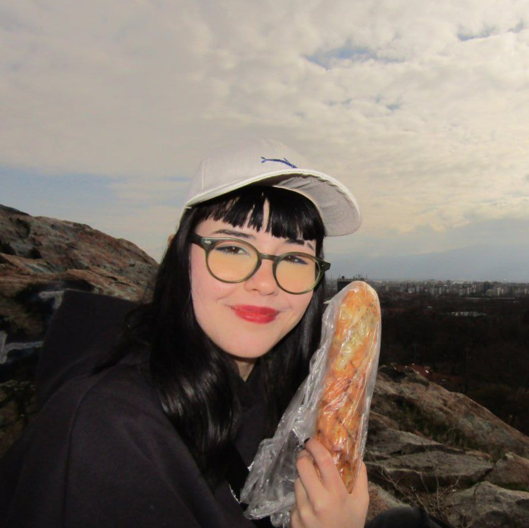

My name is Sofiia Panenko and I`m from Ukraine, Odesa. Since the war began i have been living in Bulgaria. I`m 19 years old. Now I am a student in Bulgarian National Academy of Arts as a books illustator. Unfortunately I don`t like my speciality so I will change it to Fine arts. This change will be especially useful if I want to find a job, because I`ll have more free time.
After 9th grade in Ukraine I entered the College of Information Technology and Communications in Odesa, but only for 1 year. When I left Ukraine, studying became quite useless, so I dropped it out to study in Bulgarian school. In college I had experience working with Python. During school studying I took UX and UI design courses, HTML and CSS courses.
I like painting and drawing, whatever is in someway connected with holding a pencil or brush. I work a lot with drawing software so i have many digital artworks which you can check in Gallery. I do like making jewellery also. Cooking as well. If I`d have to say something about music it would be kind of difficult to decide which band or musician is my favourite. Here are some of them: